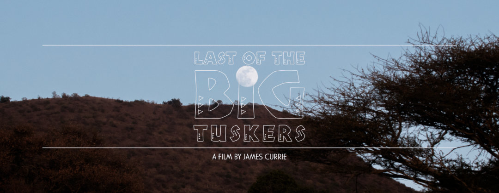
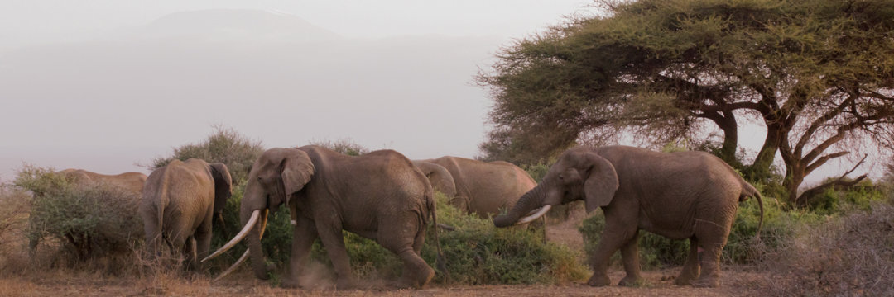

Last of the Big Tuskers was born out of producer James Currie’s love for elephants and a little known wilderness called Maputaland in the northeastern corner of South Africa. A life-long wildlife enthusiast, published author and native of South Africa, James Currie has much experience in the wildlife TV arena. James hosts and produces the popular birding TV show, Nikon’s Birding Adventures, on Discovery’s Destination America. He also hosted the popular action-birding show Aerial Assassins on National Geographic WILD and Twitchers on the National Geographic Channel.
Greg’s Nelson’s TV began with the South African Broadcast Corporation (SABC) where he worked as a news cameraman and editor for 10 years. Greg covered the release of Nelson Mandela for WTN and worked for Associated Press. He was contracted for two years to ITN Channel 4 News as a multi-skilled Cameraman/Editor, working in Africa and the Far East where he assisted in establishing a Hong Kong Bureau. Greg’s childhood passion for the natural world and his creative eye led to him working as a director of photography (DOP) for leading international wildlife outlets: Discovery Channel, BBC, National Geographic, and Animal Planet. He has much experience filming elephants and was the DOP for the film When Giants Fall (2015).
Tom Mahamba is one of the lead characters in Last of the Big Tuskers. Tom was born in Maputaland and was a guide and manager at Tembe Lodge in Tembe Elephant Park, South Africa. Tom had a deeply personal relationship with Isilo and knew the legendary elephant better than almost anyone. Tom is somewhat of a legend as a guide at the park and many visitors remember him for his welcoming smile and bubbling personality. His was a life-long passion for elephants and conservation, and he was deeply involved in efforts to preserve the big tusker elephants of Tembe for generations to come.
Johan Marais is the world’s undisputed authority on big tuskers and has written several books on the subject. He is also a respected veterinarian who specializes in large mammals like elephants and his insights into the big tuskers of Africa are incredibly valuable to the future conservation of these giants and their genes. Johan has traveled all across Africa in his quest to photograph and document the last big tuskers on the planet.
The team would also like to thank the staff of Tembe Elephant Park for their support and assistance and would also like to acknowledge the commitment and dedication of Ross Goode to our project.
Many thanks to Monica Lee for consulting on film development.
Special thanks to the Last of the Big Tuskers backers on Kickstarter who helped get this important conservation message heard and seen. Please keep spreading the word for the big tuskers of Africa!
Tim at Amboseli National Park, Kenya (2016)